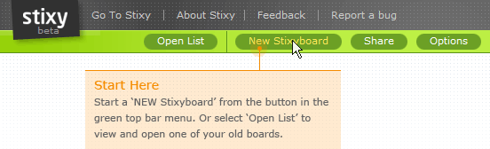
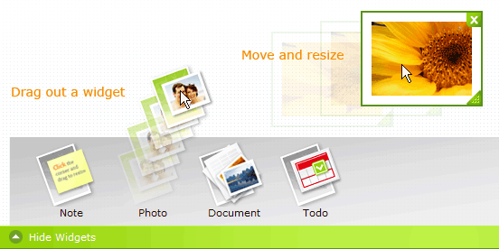
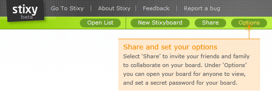

January 23, 2008 09:03 AM
Since you may not have heard that much about Stixy, I thought I'd give you a short introduction.
If you prefer to sign in right away, go to http://stixy.com/signin. Sign in by using your email address and the password you picked when signing up.
Stixy is incredibly easy and fun to work with. And it is free.
To start a new Stixyboard, sign in to Stixy, and select “New Stixyboard”.
Now start being creative! We have no fixed grid that you need to follow. Just drag a widget out on the board and place it anywhere you want. Resize it, move it around, and select from a number of options to design your reminders, photos, notes, and files.
If you wish, you can share your Stixyboard with others, perhaps friends, family, or your colleagues at work. There are different levels of access ranging from view only to full sharing and true collaboration. You find the settings under Stixyboard options. Each Stixyboard has a unique set of members as well as access settings. No one else can see or use your board unless you choose to open your board for public view.
If you have any questions, send an email to feedback@stixy.com.
We hope that you will enjoy Stixy as much as we do.
Take care
Maria
The Stixy Team